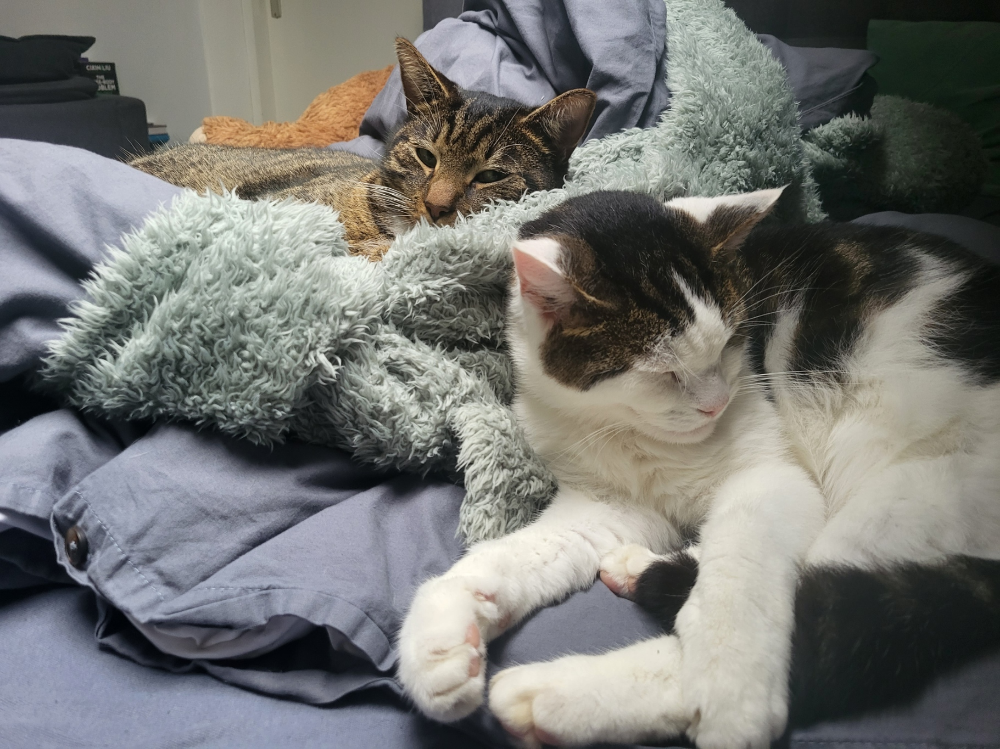
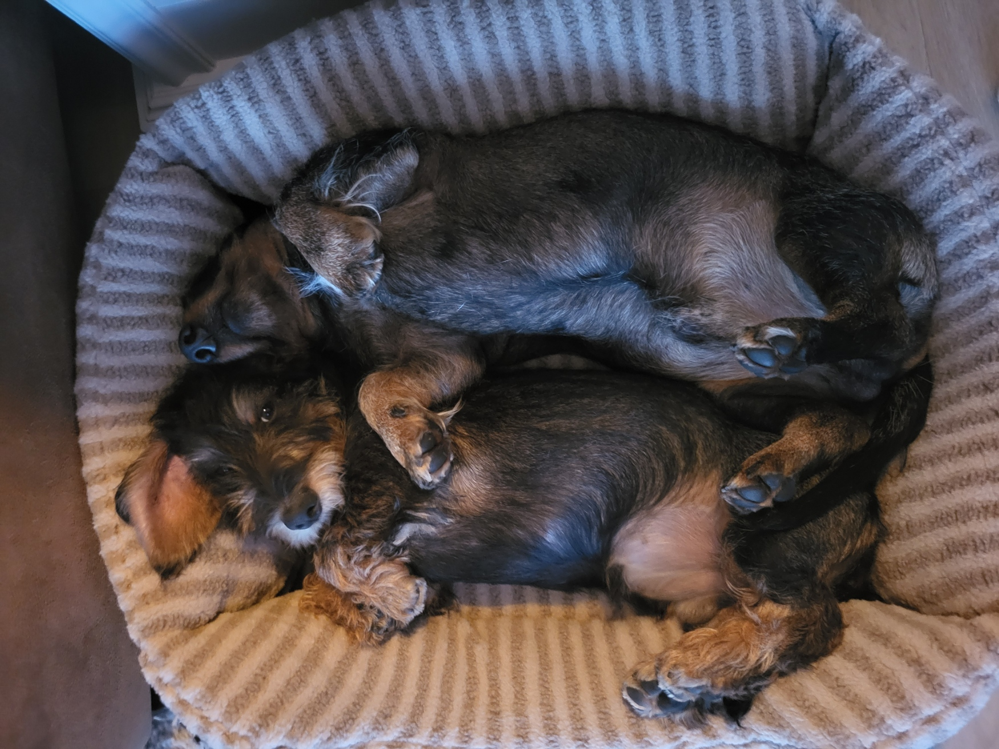

Over mij
Mijn naam is Seb van den Hoven, ik ben 20 jaar oud en kom uit Middelburg. Voordat ik met deze studie ben begonnen heb ik 1,5 jaar Japans in Leiden gestudeerd.
Thuis heb ik 2 honden en 2 katten:
 Van links naar rechts is het: James, Billy, Suus en Bobbie
Karakteristieken
-
Slecht in opgeven
-
Houd van dieren
-
Heel slecht in multitasken
-
Slecht in opgeven
Link naar mijn Github pagina:
Hobby's
Natuurlijk houd ik van gamen, mijn favoriete soort spellen zijn JRPG's, momenteel ben ik bezig met Trails of Cold steel IV, dit is het 9de spel in de Trails series, ook ben ik begonnen met Fate/Stay Night.
Ook lees ik laatste tijd graag webnovels want ze zijn vaak langer dan gewone boeken, en als je kindle unlimited hebt kan je deze meestal zonder nog extra te betalen lezen.

Xenoblade Chronicles is mijn favoriete spel series.
Xenoblade Chronicles heeft ook één van mijn favoriete soundtracks, met name deze track: